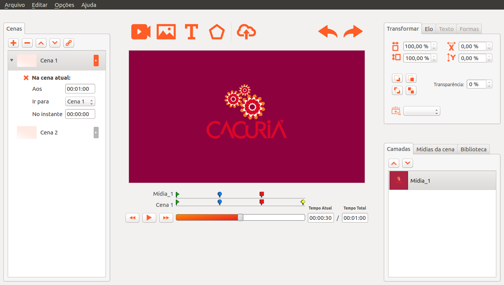

Cacuriá
An authoring tool to create educational content
Overview
(S)ituation: As an M.Sc. candidate at the LAWS Lab - UFMA (2013–2015), I identified a critical challenge in the development of educational interactive videos, which typically requires a multidisciplinary team and extensive resources.
(T)ask: My goal was to streamline this process by enabling educators—without technical expertise—to independently create enriched multimedia educational content.
(A)ction: I led the development of Cacuriá, an intuitive authoring tool for educational videos that allows teachers to incorporate images, audio, and text without programming. I built the system using C++ and the Qt framework, ensuring cross-platform compatibility. The tool was designed with educators through a participatory process and integrated with Brazil’s national iVoD platform (RNP).
(R)esult: Cacuriá empowered teachers to create content more independently and efficiently. The project became the foundation of my co-founded startup, Mediabox Technologies, which supported Cacuriá’s deployment and launched Mestrar, a complementary learning object delivery platform. This venture marked my transition into a leadership role, as I managed a growing team of 7+ members and helped scale our educational tech solutions across Brazil.
Full Report
During my time as an M.Sc. candidate at LAWS lab. - UFMA between 2013 and 2015, I undertook a significant project that formed the basis of my research. This project aimed to support instructors in the creation of educational interactive videos. Typically, developing such content necessitates a multidisciplinary team, as it can be a complex, costly, and time-consuming process. Software developers are required to write the source code, designers contribute to the visual identity, education experts formulate and assess teaching goals, and at the heart of the team lies the content specialist, often a teacher or tutor, who provides the subject matter to be taught.
It is interesting to compare this scenario with contemporary content authoring on the Web. In the early days, web pages were predominantly constructed by experts proficient in markup languages and internet protocols. Over time, the web has democratized, leading to the emergence of new roles, like web designers, whose primary responsibility is to design and develop web pages. Today, a wide array of web content is created by non-developers, such as blogs that can be authored and managed by end users with no knowledge of web programming languages. Additionally, various users, including journalists and writers, establish profiles on social networks containing texts, videos, images, and various multimedia components. The facilitation of content authoring on the web for end users is arguably a key factor behind its widespread popularity.
Based on this scenario, we developed Cacuriá, an authoring tool designed for the creation of educational content, also known as learning objects, for web and Interactive Digital TV environments. This content predominantly centers around educational videos, which can be enriched by teachers directly, without the need for a programmer or designer, through the addition of multimedia elements like images, audio, and text. Cacuriá was crafted by teachers, who played an integral role in each step of the project, ensuring an intuitive and user-friendly design.
As the principal developer of Cacuriá, I utilized C++ and the Qt framework to create a versatile tool compatible with various operating systems, including Ubuntu, MAC OS, and Windows. Figure below presents the current Cacuria's interface drew inspiration from popular applications used by teachers, such as Microsoft PowerPoint, making it particularly accessible to end users without specific programming knowledge.
 Figure 1: Screenshot of the Cacuria interface, showcasing its intuitive layout.
One of Cacuriá's most exciting features is its integration with the iVoD service from RNP, the National Research and Educational Network responsible for advancing network development in Brazil. RNP is dedicated to providing innovative applications and services that enhance the learning experience, and Cacuriá stands as a shining example of this commitment. I am so proud to have been a part of its development.
This project had a deep impact on my career as a researcher. Almost completing my M.Sc. degree, I co-founded Mediabox Technologies with a friend in 2014. Our company's primary focus is to promote Cacuriá in Brazil and provide ongoing maintenance for the tool to support RNP. Additionally, we developed Mestrar, an online platform designed to provide storage and delivery for students, content created by Cacuriá. The architecture is illustrated below. Over two years, our company expanded to include seven more dedicated colleagues. Notably, this venture marked my first experience as a manager. This experience proved to be a significant challenge and served as my first foray into a leadership role.
Figure 2: System architecture of Cacuriá and Mestrar: illustrating the integration between the content creation tool (Cacuriá) and the content storage and delivery platform (Mestrar), developed to support educational initiatives and RNP's requirements.
Video: A promotional video presenting what Cacuriá is and its key features.